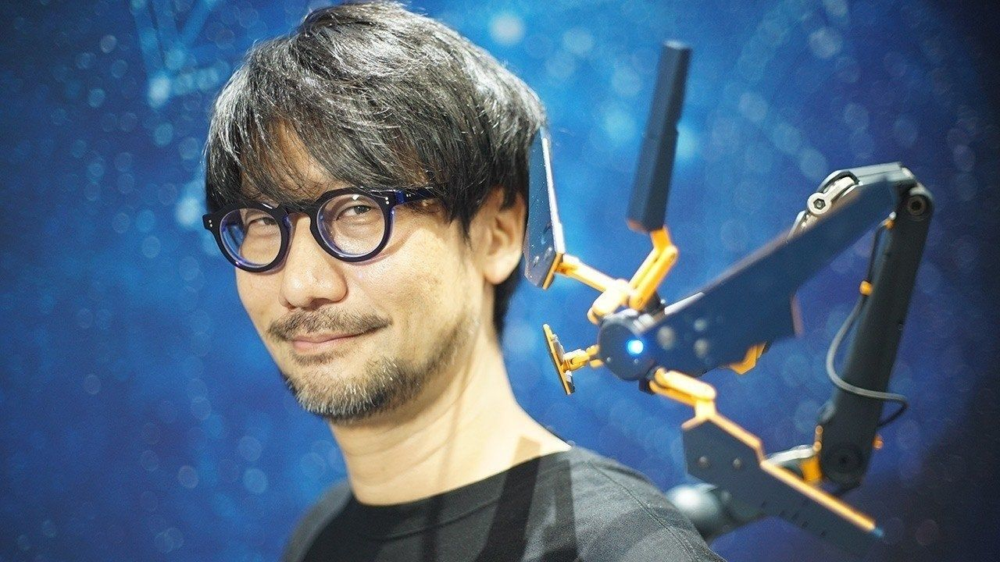

Новинки в нашому куточку
Наш інтернет-магазин поповнився новими товарами з Японії: манга, аніме фігурки, солодощі. Також ми маємо нову пропозицію для нових клієнтів - при покупці будь-яких смаколиків ми даруюємо два купони на знижку на товари в категорії "солодощі".
Новий проєкт від генія
Японський геймдизайнер, сценарист, продюсер та керівник розробки відеоігор Хідео Кодзіми повідомив про розробку нової частини Death Stranding. Це буде пряме продовження культової гри. Також по словами деяких інсайдерів планується кіноадаптація Death Stranding.
Фестиваль Ханамі
Цвітіння сакури в Японії – дивовижна подія, святкування якої вже на протязі декількох століть є японською традицією. Виникла ця традиція ще при імператорському дворі, коли дворяни щовесни насолоджувалися відпочинком під квітучими деревами.